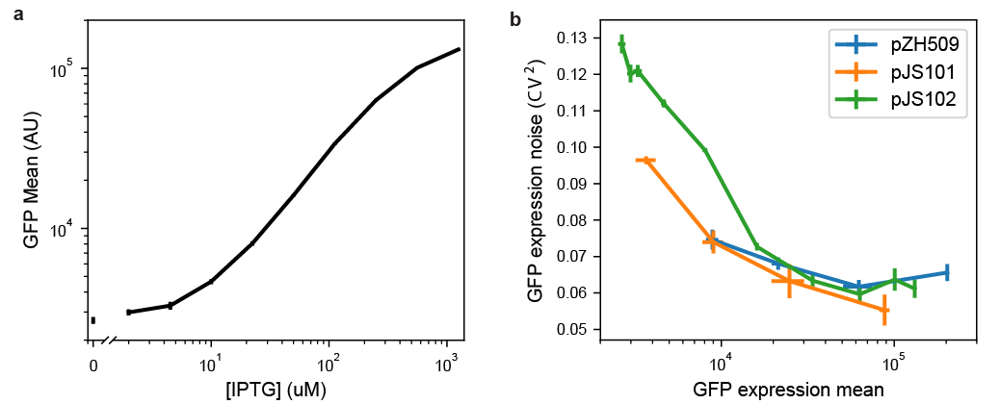

João P. N. Silva 0000-0003-4455-4286 Instituto de Tecnologia Química e Biológica António Xavier, Universidade Nova de Lisboa, Oeiras, Portugal
Soraia Vidigal Lopes 0000-0002-3705-2619 Instituto de Tecnologia Química e Biológica António Xavier, Universidade Nova de Lisboa, Oeiras, Portugal
Diogo J. Grilo 0000-0003-1279-3629 Instituto de Tecnologia Química e Biológica António Xavier, Universidade Nova de Lisboa, Oeiras, Portugal
Zach Hensel 0000-0002-4348-6229 · zach-hensel Instituto de Tecnologia Química e Biológica António Xavier, Universidade Nova de Lisboa, Oeiras, Portugal · Funded by Project LISBOA-01-0145-FEDER-007660 (Microbiologia Molecular, Estrutural e Celular) Correspondence: zach.hensel@itqb.unl.pt
Abstract
Some microbiology experiments and biotechnology applications can be improved if it is possible to tune the expression of two different genes at the same time with cell-to-cell variation at or below the level of genes constitutively expressed from the chromosome (the “extrinsic noise limit”). This was recently achieved for a single gene by exploiting negative autoregulation by the tetracycline repressor (TetR) and bicistronic gene expression to reduce gene expression noise. We report new plasmids that use the same principles to achieve simultaneous, low-noise expression for two genes. The TetR system was moved to a compatible plasmid backbone, and a system based on the lac repressor (LacI) was found to also exhibit gene expression noise below the extrinsic noise limit. We characterize gene expression mean and noise across the range of induction levels for these plasmids, apply the LacI system to tune expression for single-molecule mRNA detection in two different growth conditions, and show that two plasmids can be co-transformed to independently tune expression of two different genes.
Introduction
We recently reported the development of a plasmid-based gene-expression system in which a gene of interest is expressed bicistronically with the tetracycline repressor (TetR) [1]. Using this gene expression system, cell-to-cell variation is below the “extrinsic noise limit” (coefficient of variation squared of protein concentration, \(CV^2 \approx 0.1\)) observed for genes expressed from the chromosome [2]. When TetR and GFP are expressed bicistronically, GFP induction and gene expression noise is similar to that observed for a TetR-GFP fusion protein with autoregulation [3]. Compared to induction of gene expression under the control of a constitutively expressed transcriptional repressor, the inducer dose-response is relatively linearized, and gene expression noise is much lower at intermediate induction levels [1].
Our recent experiments in mRNA detection and other single-molecule experiments in living E. coli cells sometimes require the tunable expression of two different genes, both with low noise levels. For example, adopting a recently reported mRNA detection systems based on local enrichment of fluorescent RNA-binding proteins [4] for use in E. coli requires lower noise in protein production relative to the same system in S. cerevisiae, because of a smaller cell volume and the inability to sequester unbound protein in the nucleus. At the same time, tunable expression with low noise in the level of the target RNA is desired to make it possible to characterize the accuracy of RNA detection over a range of RNA levels. We hoped that expressing both the target RNA and RNA-binding fluorescent protein on two plasmids that could be tuned independently would simplify and accelerate development of new RNA-detection systems in E. coli. Achieving this was a three-step process: first, characterizing the TetR-based system on a compatible plasmid backbone; second, establishing an orthogonal, low-noise expression system based on the lac repressor (LacI); and third, showing that the two systems can be tuned independently.
Methods
Strain construction
All plasmids were constructed using isothermal assembly [5] of fragments generated by PCR or double stranded DNA synthesis (IDT, Coralville) and transformed into Top10 E. coli cells (5-1600-020, IBA Life Sciences, Göttingen). Transformants were screened by colony PCR and verified by sequencing. Purified plasmids were transformed into E. coli strain MG1655 by growing 3 mL of culture in SOB media at 30 °C to an optical density at 600 nm (OD600) of 0.4, washing twice with 1 mL ice-cold water, resuspending in 40 µL water, electroporating 1—10 ng plasmid with the EC1 setting of a Micropulser (Bio-Rad Laboratories, Hercules), and recovering for 1 hour at 37 °C in SOC media before plating on selective LB-agar.
To generate pJS101 with a compatible backbone, plasmid pZH509 [1] was used as a template to amplify the bicistronic regulatory construct including the PLtetO-1 promoter [6], GFPmut2 [7], tn10 TetR [8] and rrnB T1 transcription terminator [9]. This was constructed by isothermal assembly with the backbone from pGB2 [10] with the pSC101 origin of replication and spectinomycin resistance to generate plasmid pJS101. Plasmid pJS102 was generated by 3-fragment isothermal assembly. Plasmid pZH509 was used as a template both for the vector backbone and for GFPmut2, with non-homologous extensions added to PCR primers to generate the PLlacO-1 promoter [6]. LacI [11] was amplified from E. coli MG1655 by colony PCR.
The test strain for mRNA imaging, ZHX99, was constructed similarly to ZHX222 in recent work [12]. In ZHX99, a construct in which a fusion protein of mVenus and Cro is expressed from the bacteriophage λ promoter PR was integrated into the chromosome to replace the lac operon in MG1655 [13]. ZHX99 differs from ZHX222 in three ways. First, the PR promoter was weakened by site-directed mutagenesis to produce a strain with lower mRNA levels. Second, a very strong ribosome binding site was added (RBS #136 [14]). Lastly, 24 tandem repeats of the recognition sequence for the PP7 coat protein (PP7cp) were inserted between the open reading frame and transcription terminator (amplified by PCR from pDZ251 [15]). The pZH713 plasmid for mRNA detection was constructed by replacing GFPmut2 in pJS102 with a fusion protein of SYFP2 (amplified from a plasmid [16]) and PP7cp (generated by codon optimization and DNA synthesis based on previously reported sequences [17]). Additionally, in pZH713 the PP7cp-SYFP2 fusion protein is translated from the weak ribosome binding site from pZH511 [1]. We note that mVenus expression in ZHX99 is extremely low (undetectable without strong laser excitation) and does not interfere with mRNA detection by localizing up to 48 SYFP2 molecules in a diffraction-limited spot bound to a single mRNA molecule.
To test independent induction of two genes, GFPmut2 in pJS102 was replaced by mScarlet-I (amplified from a plasmid [18]) to make pDG101. Plasmids were co-transformed into MG1655 by electroporation following the above protocol, except with 1 µL each undiluted plasmid (20—40 ng) and selecting on LB-agar plates with both spectinomycin and carbenicillin. Sequence maps are included in File S2 and plasmids useful for constructing additional two-gene expression systems (pJS101 and pJS102, Table 1) are available from AddGene (deposit numbers 118280 and 118281) and have been verified by NGS [19].
Table 1: Plasmids used in this study. Ori is origin of replication. GOI is the gene of interest, which in all plasmids is expressed from a bicistronic mRNA with the appropriate repressor (TetR or LacI) .
Characterization of GFP expression by flow cytometry
All flow cytometry experiment were repeated 3 times on different days and used plasmids transformed by electroporation into E. coli MG1655. Cultures were grown overnight at 30 °C from LB-agar plates supplemented with carbenicillin or spectinomycin (both at 50 \(\mu g /mL\)) in 1 mL EZ Rich Defined Medium (M2105, Teknova, Hollister) supplemented with the same antibiotics. Cells were reinoculated 1:400 in 1 mL of the same media supplemented with Isopropyl β-D-1-thiogalactopyranoside (IPTG, at concentrations of 0, 2, 4.5, 10, 22.4, 50, 111.8, 250, 559, and 1250 µM) or anhydrotetrycline (ATc, at concentrations of 1, 5, 25, and 125 nM) as indicated and grown at 30 °C for 4—4.5 hours until reaching an optical density at 600 nm of 0.2—0.3. Next, 10 µL of cells were added to 1 mL of PBS at pH 7.4 and examined by flow cytometry.
Flow cytometry data was collected on an S3e cell sorter (Bio-Rad, Hercules) using a target flow rate of 2,000 counts/s and collecting 30,000 counts for each sample. A 488-nm laser line was used for excitation at its maximum power setting with amplification settings of 450 (forward scattering, FSC), 350 (side scattering, SSC), and 900 (FL1, 525/30 nm). The cell sorter is calibrated daily for a linear response to sample fluorescence intensity. Acquisition was triggered by forward scattering with a threshold of 3. Data was exported as an FCS file and imported into a custom Python script using FlowCal [20]. Following previous methods [1], one third of samples were selected based on proximity to the peak of FSC-AREA and SSC-HEIGHT in a 2D histogram using the density2d method in FlowCal. The FL1-AREA measurements were used to estimate the mean and variance of GFP distributions for all samples. This was done by estimating the probability density functions in bins distributed equally in logarithmic space and fitting by least squares minimization to a gamma function. We found that this method reduced the influence of low-FL1-AREA events that escaped other gating steps, and which had frequencies that varied for different samples and days (Figure S1). In all plots, the mean fluorescence of a strain harboring a similar plasmid, pZH501, that does not encode a fluorescent protein, was subtracted [1]. The script for data analysis as well as all raw FCS data is available in File S2 and utilized modules from SciPy, NumPy, Matplotlib, and Pandas.
Microscopy
For microscopy, cells were grown similarly to the protocol for flow cytometry, except that overnight cultures were diluted 1:100 and imaged after 2—4 hours of growth with induction. For mRNA imaging, cells were grown in M9 media supplemented with 1X MEM Amino Acids (M9A) or M9A additionally supplemented with 1% SOB media. For 2-plasmid imaging, cells were grown in EZ Rich media. Cells were imaged on agarose gel pads (3% BP165-25, Fisher Bio-Reagents) diluted in M9A (for mRNA imaging) or PBS (for 2-plasmid imaging). For mRNA imaging, the microscope sample chamber was maintained at 30 °C. All imaging was done on a Leica DMI6000 inverted microscope using illumination from a Leica EL6000 source (at various intensities ensuring minimal photobleaching during acquisition), fluorescence filter cubes (Leica GFP ET, a custom filter set with Semrock filters FF01-561/13, FF02-616/73, and DI02-R561, or the Semrock LF514-B filter set), a 100x/1.46 a-plan apochromat oil immersion objective, and an Evolve 512 EM-CCD camera (Photometrics) using a 16-bit EM gain amplification. Images were prepared using Fiji [21], with linear scaling and maintaining minimum and maximum intensity values for all comparable images.
To analyze microscopy data for 2-plasmid imaging, 100 cells from each sample were manually segmented using the selection brush tool in Fiji with a width of 10 pixels. This selection was used to extract the mean green and red intensities (proportional to the concentration of GFPmut2 and mScarlet-I molecules in the cell, respectively) in images of the same areas. For each image, the mean background intensity was also measured from a region containing no cells, which was subtracted from each single-cell data point. The average fluorescence level was calculated for each condition, and normalized by the highest average value for each color (20,500 counts/pixel for green and 10,534 counts/pixel for red). The Fiji and Python scripts used to analyze microscopy data are available in File S2.
Results
Moving bicistronic autoregulatory construct to a compatible plasmid backbone
The first step in creating a low-noise system for tuning expression of two genes is to establish that a previously characterized bicistronic autoregulatory circuit functions well in a compatible plasmid backbone. In this expression system, GFP and TetR are expressed bicistronically from the TetR-repressible promoter PLtetO-1 and expression is induced by the addition of ATc [1]. This system was shown to have low noise and a linearized dose response compared to a system in which TetR is constitutively expressed. We moved the system from a plasmid with a p15A replicon conferring ampicillin resistance to a lower-copy-number plasmid with a pSC101 replicon conferring spectinomycin resistance [10]. The p15A and pSC101 replicons have been used together in multiplasmid systems [22].
GFP expression mean and noise were characterized from low to high levels of induction by flow cytometry. Figure 1 shows that pJS101 induces at similar ATc concentrations as pZH509, with the change to the lower-copy pSC101 backbone resulting in a 58% drop in mean expression levels at a wide range of ATc concentrations. For a similar expression system in the absence of autoregulated TetR expression, moving the PLtetO-1 promoter from a p15A to a pSC101 backbone resulted in an 87% drop in expression [6]. A smaller change is expected in our experiment, since negative autoregulation will provide dosage compensation, just as autoregulation can reduce noise in plasmid copy number [23,24,3].
Figure 1:Influence of plasmid backbone on induction of TetR expression system. Mean single-cell GFP fluorescence for pZH509 (blue) and pJS101 (orange) plasmids as a function of ATc concentration. Error bars are 1 standard error.
Alternative regulatory constructs with LacI replacing TetR
We hypothesized that replacing PLtetO-1 with the inducible promoter PLlacO-1, with similar characteristics [6], and replacing TetR with LacI might result in a similarly useful expression system that could be tuned independently. However, regulatory parameters for TetR and LacI vary significantly. TetR binds tetO2 more strongly than LacI binds lacO1 (approximately 0.5—1.0 kcal/mol difference in binding energy [25,26] for a single site, with 2 tandem sites in our constructs). And, TetR binds ATc much more strongly than LacI binds IPTG (over 3 orders of magnitude difference in typical concentrations required for half-induction [27,28]).
We first characterized induction of GFP expression in MG1655 cells harboring IPTG-inducible pJS102 by flow cytometry. Figure 2a shows an induction range of almost 2 orders of magnitude from 0 to 1250 µM IPTG, with very good reproducibility of induction levels in 3 independent experiments. Previous experiments with the TetR-based system showed a large jump in expression going from 0 nM to 0.5 nM ATc [1]. This effect is not seen for pJS102, suggesting that switching from TetR:ATc to LacI:IPTG improves the dynamic range of achievable induction levels to a small extent.
Figure 2:Characterizing mean expression levels and noise for different gene expression systems. (a) Mean GFP expression for pJS102 with different IPTG concentrations. Expression at zero IPTG is plotted separately to fit on logarithmic scale. Error bars 1 standard error. (b) GFP expression noise (CV2) as a function of mean for pZH509, pJS101, and pJS102. GFP mean increases monotonically with inducer concentration. Error bars 1 standard error.
Next, we compared noise in protein expression, with the concern that the lac operon present in the MG1655 host strain could lead to all-or-none expression at intermediate IPTG concentrations [29]. However, Figure 2b shows low noise in GFP expression at all IPTG concentrations, with noise levels comparable to pZH509 and pJS102 at the same mean GFP levels. Note that apparently high noise at very low expression is partially due to measurement noise, and, at any rate, is much lower than noise when expression is regulated by a constitutively expressed repressor [1]. Here, we also note that noise for pJS101, with its lower-copy-number pSC101 replicon, is lower than that for pZH509 or pJS102 at similar expression levels. This suggests that incorporating this construct into the chromosome, where copy number is more tightly regulated, may lead to a further noise reduction.
We found that side scattering was weakly correlated with fluorescence, and thus with cell size, so gating for scattering modestly reduces measured noise in fluorescence intensity. However, we are comparing to an “extrinsic noise limit” determined from measurements of cell fluorescence divided by cell area [2], which effectively does the same thing. In practice, we observe slightly lower noise measurements for GFP concentration in fluorescence microscopy images compared to total GFP fluorescence in the gated flow cytometry sample for similarly induced strains. This difference was more significant for very-low-expression conditions, and noise in conditions where GFP fluorescence distributions significantly overlap with ungated background events (GFP intensity less than 104 in Figure S1) is somewhat overestimated. Our noise measurements are also similar to those found for many E. coli promoters using a similar flow cytometry method with similar gating and fitting procedures [30].
Using the new induction system for detection of single mRNA in living E. coli
Recently, an improved method for detection of mRNA by local enrichment of fluorescent, RNA-binding proteins was reported in S. cerevisiae[4]. This reduced the aggregation of mRNAs bound by the bacteriophage MS2 coat protein, which has also caused mRNA immortalization that has limited experiments in E. coli to observing transcription just after induction [31]. We hypothesized that aggregation could be reduced by reducing the expression levels of both mRNA and mRNA-binding proteins, and by having low cell-to-cell variation in expression. We developed a strain in which mRNA molecules encoding mVenus-Cro and also including 24 tandem repeats of the binding sequence for the PP7 coat protein (PP7cp) [15] were constitutively expressed at low levels (less than 1 molecule per cell). Plasmid pJS102 was used as a template to develop a fluorescent, IPTG-inducible reporter of expression, PP7cp-SYFP2.
We tested the utility of this expression system for tuning low-noise gene expression in different growth conditions. In previous experiments, we expressed the RNA-binding protein from a constitutive promoter integrated into the chromosome; this required long cycles of optimization every time a parameter was changed (e.g. growth media, temperature, and fluorescent protein sequence) that changed protein expression levels. Figure 3a shows that single-molecule mRNA detection was optimal at 100 µM IPTG in partially rich media. We note the absence of pole-localized fluorescent spots that characterize mRNA aggregation [32], and we observed reasonable mRNA lifetimes of a few minutes in timelapse imaging.
We moved to minimal media hoping to find a growth condition with lower mRNA expression levels, but found that 100 µM IPTG gave a background of unbound PP7cp-SYFP2 molecules that often made it impossible to detect mRNA spots. Figure 3b shows how the IPTG-inducible expression system made it simple to quickly scan several different PP7cp-SYFP induction conditions and identify 10—20 µM IPTG as an optimal growth condition. Lastly, we note that the strain used for mRNA imaging has its entire lac operon replaced by the synthetic construct. Thus, this expression system works well both in the presence and absence of the lac operon.
Figure 3:Using IPTG to tune expression of a fluorescent RNA-binding protein for single mRNA detection in different growth conditions. (a) PP7cp-SYFP2 is induced with 100 µM IPTG to detect single mVenus-Cro mRNA molecules in supplemented media and minimal media conditions; in minimal media there is too high a PP7cp-SYFP expression level to see single mRNA spots above background. Scale bar 4 µm. (b) Using the pJS102 expression system, an optimal range of 10—20 µM IPTG is quickly identified for single mRNA detection in minimal media. Scale bar 2 µM. Two example images are shown for each condition. Images were taken shortly after preparing samples, so adjacent cells are not usually closely related in cell lineages.
Independent, tunable expression of two genes
Lastly, we tested whether ATc-inducible and IPTG-inducible plasmids could be combined to achieve low-noise expression of two genes into the same cell. We replaced GFPmut2 in pJS102 with the fast-maturing RFP mScarlet-I [18] to create the plasmid pDG101. This plasmid was co-transformed with pJS101 into E. coli MG1655 and green and red fluorescence were compared at different combinations of ATc and IPTG concentrations. Figure 4a shows that pJS101 induction by ATc was unaffected by pDG101 induction by IPTG, and that all conditions gave low noise in GFP concentration. Figure 4b shows that mScarlet-I expression from pDG101 was similarly unaffected by the level of pJS101 induction by ATc. Thus, independent, tunable expression of two genes can be achieved by replacing GFPmut2 in pJS101 and pJS102 with other genes of interest and co-transforming the plasmids into E. coli.
Figure 4:Independence of induction of TetR and LacI systems. MG1655 cells harboring pJS101 (ATc-inducible expression of GFP) and pDG101 (IPTG-inducible expression of mScarlet-I) were grown with different combinations of IPTG and ATc concentrations. (a) GFP fluorescence shows no influence of IPTG on ATc-induced expression of GFP. (b) No influence of ATc on IPTG-induced expression of mScarlet-I. The same regions are imaged as in a. Scale bar 3 µm. (c) Average single-cell GFP (green) and mScarlet-I (red) fluoresence, normalized by the maximum average fluorescence for each color. Solid lines: 10 nM ATc. Dashed lines: 50 nM ATc. A small decrease in mScarlet-I fluorescence in 50 nM ATc occurred because samples were prepared at the same time on PBS gel pads without inducer; 10 nM ATc samples were imaged approximately 30 minutes later, with some additional mScarlet-I expression, maturation, and cell growth.
Discussion
We expect that the expression plasmids introduced here will be useful for diverse applications in molecular biology. Expression and purification of heteromeric protein complexes could be improved by stoichiometric production of their components, mimicking proportional synthesis in natural systems [33]. Additionally, low-noise expression can improve protein production yields [34]. These systems could also be used in synthetic biology applications where yields can be improved by sequential induction of different components with low cell-to-cell variability. The capacity for low-noise expression at very low expression levels makes them particularly promising for single-molecule imaging experiments or for recombinant expression of low-copy-number components with low cell-to-cell variation to reproduce chromosomal expression levels.
Using modern molecular cloning techniques, it is simple to replace GFPmut2 in pJS101 and pJS102 with genes of interest by PCR and isothermal assembly with near 100% efficiency and a low probability of clones with incorrect sequence. The apparent insensitivity of this circuit to regulatory parameters (DNA and inducer binding affinities) suggests that it can be easily extended to a third repressor-based expression system. Further, additional ribosome binding sites can be added to the bicistronic operon to express additional components.
Author contributions
JS, DG and ZH designed experiments and performed experiments. JS, SL, DG, and ZH performed molecular cloning. ZH and JS analyzed data and wrote the paper. JS, SL, DG and ZH edited and approved the manuscript. ZH supervised the project.
Acknowledgments
This work was financially supported by: Project LISBOA-01-0145-FEDER-007660 (Microbiologia Molecular, Estrutural e Celular) funded by FEDER funds through COMPETE2020—Programa Operacional Competitividade e Internacionalização (POCI), by national funds through FCT—Fundação para a Ciência e a Tecnologia, and through a joint research agreement with the Okinawa Institute of Science and Technology (OIST). This manuscript was composed and edited using Manubot [35].
2. Quantifying E. coli Proteome and Transcriptome with Single-Molecule Sensitivity in Single Cells
Y. Taniguchi, P. J. Choi, G.-W. Li, H. Chen, M. Babu, J. Hearn, A. Emili, X. S. Xie Science (2010-07-29) https://doi.org/c3tkbc
DOI: 10.1126/science.1188308 · PMID: 20671182 · PMCID: PMC2922915
3. Noise in transcription negative feedback loops: simulation and experimental analysis.
Yann Dublanche, Konstantinos Michalodimitrakis, Nico Kümmerer, Mathilde Foglierini, Luis Serrano Molecular systems biology (2006-08-01) https://www.ncbi.nlm.nih.gov/pubmed/16883354
DOI: 10.1038/msb4100081 · PMID: 16883354 · PMCID: PMC1681513
5. Enzymatic assembly of DNA molecules up to several hundred kilobases
Daniel G Gibson, Lei Young, Ray-Yuan Chuang, J Craig Venter, Clyde A Hutchison, Hamilton O Smith Nature Methods (2009-04-12) https://doi.org/ckn92w
DOI: 10.1038/nmeth.1318 · PMID: 19363495
6. Independent and tight regulation of transcriptional units in Escherichia coli via the LacR/O, the TetR/O and AraC/I1-I2 regulatory elements.
R Lutz, H Bujard Nucleic acids research (1997-03-15) https://www.ncbi.nlm.nih.gov/pubmed/9092630
PMID: 9092630 · PMCID: PMC146584
8. Nucleotide sequence of the repressor gene of the TN10 tetracycline resistance determinant
Kathleen Postle, Toai T. Nguyen, Kevin P. Bertrand Nucleic Acids Research (1984) https://doi.org/cvpfkh
DOI: 10.1093/nar/12.12.4849
10. A pSC101-derived plasmid which shows no sequence homology to other commonly used cloning vectors.
G Churchward, D Belin, Y Nagamine Gene (1984-11) https://www.ncbi.nlm.nih.gov/pubmed/6098521
PMID: 6098521
12. Cell-cycle-synchronized, oscillatory expression of a negatively autoregulated gene in E. coli
Zach Hensel, Tatiana T. Marquez-Lago arXiv (2015-06-29) https://arxiv.org/abs/1506.08596v1
14. Translation rate is controlled by coupled trade-offs between site accessibility, selective RNA unfolding and sliding at upstream standby sites.
Amin Espah Borujeni, Anirudh S Channarasappa, Howard M Salis Nucleic acids research (2013-11-14) https://www.ncbi.nlm.nih.gov/pubmed/24234441
DOI: 10.1093/nar/gkt1139 · PMID: 24234441 · PMCID: PMC3936740
16. Cyan and yellow super fluorescent proteins with improved brightness, protein folding, and FRET Förster radius.
Gert-Jan Kremers, Joachim Goedhart, Erik B van Munster, Theodorus WJ Gadella Biochemistry (2006-05-30) https://www.ncbi.nlm.nih.gov/pubmed/16716067
DOI: 10.1021/bi0516273 · PMID: 16716067
18. Characterization of a spectrally diverse set of fluorescent proteins as FRET acceptors for mTurquoise2.
Marieke Mastop, Daphne S Bindels, Nathan C Shaner, Marten Postma, Theodorus WJ Gadella, Joachim Goedhart Scientific reports (2017-09-20) https://www.ncbi.nlm.nih.gov/pubmed/28931898
DOI: 10.1038/s41598-017-12212-x · PMID: 28931898 · PMCID: PMC5607329
20. FlowCal: A User-Friendly, Open Source Software Tool for Automatically Converting Flow Cytometry Data from Arbitrary to Calibrated Units.
Sebastian M Castillo-Hair, John T Sexton, Brian P Landry, Evan J Olson, Oleg A Igoshin, Jeffrey J Tabor ACS synthetic biology (2016-05-12) https://www.ncbi.nlm.nih.gov/pubmed/27110723
DOI: 10.1021/acssynbio.5b00284 · PMID: 27110723 · PMCID: PMC5556937
21. Fiji: an open-source platform for biological-image analysis.
Johannes Schindelin, Ignacio Arganda-Carreras, Erwin Frise, Verena Kaynig, Mark Longair, Tobias Pietzsch, Stephan Preibisch, Curtis Rueden, Stephan Saalfeld, Benjamin Schmid, … Albert Cardona Nature methods (2012-06-28) https://www.ncbi.nlm.nih.gov/pubmed/22743772
DOI: 10.1038/nmeth.2019 · PMID: 22743772 · PMCID: PMC3855844
22. BglBrick vectors and datasheets: A synthetic biology platform for gene expression.
Taek Soon Lee, Rachel A Krupa, Fuzhong Zhang, Meghdad Hajimorad, William J Holtz, Nilu Prasad, Sung Kuk Lee, Jay D Keasling Journal of biological engineering (2011-09-20) https://www.ncbi.nlm.nih.gov/pubmed/21933410
DOI: 10.1186/1754-1611-5-12 · PMID: 21933410 · PMCID: PMC3189095
25. Two mutations in the tetracycline repressor change the inducer anhydrotetracycline to a corepressor
A. Kamionka Nucleic Acids Research (2004-01-21) https://doi.org/fsvj4n
DOI: 10.1093/nar/gkh200 · PMID: 14764926 · PMCID: PMC373327
32. Spatial organization of the flow of genetic information in bacteria.
Paula Montero Llopis, Audrey F Jackson, Oleksii Sliusarenko, Ivan Surovtsev, Jennifer Heinritz, Thierry Emonet, Christine Jacobs-Wagner Nature (2010-06-20) https://www.ncbi.nlm.nih.gov/pubmed/20562858
DOI: 10.1038/nature09152 · PMID: 20562858 · PMCID: PMC2896451
34. Comparative Single-Cell Analysis of Different E. coli Expression Systems during Microfluidic Cultivation.
Dennis Binder, Christopher Probst, Alexander Grünberger, Fabienne Hilgers, Anita Loeschcke, Karl-Erich Jaeger, Dietrich Kohlheyer, Thomas Drepper PloS one (2016-08-15) https://www.ncbi.nlm.nih.gov/pubmed/27525986
DOI: 10.1371/journal.pone.0160711 · PMID: 27525986 · PMCID: PMC4985164
35. Open collaborative writing with Manubot
Daniel S. Himmelstein, David R. Slochower, Venkat S. Malladi, Casey S. Greene, Anthony Gitter Manubot Preprint (2018) https://greenelab.github.io/meta-review/
36. Supplementary File S2: Plasmids for independently tunable, low- noise gene expression
João P. N. Silva, Soraia Vidigal Lopes, Diogo J. Grilo, Zach Hensel Zenodo (2019-01-09) https://doi.org/gfs2x5
DOI: 10.5281/zenodo.2536104
Supplementary Material
Figure S1:Reproducibility of low-noise expression in 3 independent experiments. Probability densities for each flow cytometry sample were calculated by kernel density estimates for the negative control plasmid pZH501 (orange), ZH509 (blue), pJS101 (green), and pJS102 (red) with fluorescence levels monotonically increasing with concentration of ATc (1, 5, 25, 125 nM) or IPTG (0, 2, 4.5, 10, 22.5, 50, 111.8, 250, 559, 1250). Distributions were fit by least squares regression to a gamma function (black dashed lines) to estimate sample mean and variance while minimizing the influence of non-fluorescent background events, which varied in frequency for different days and samples. All plots are normalized by the maximum value of the fit gamma distribution.
Supplementary File S2: Raw flow cytometry data, Python scripts required to reproduce Figures 1, 2, and 4, DNA sequences, and explanatory text files are available as a compressed archive at Zenodo [36].
 0000-0003-4455-4286
0000-0003-4455-4286 zach-hensel
zach-hensel
![Figure 3: Using IPTG to tune expression of a fluorescent RNA-binding protein for single mRNA detection in different growth conditions. (a) PP7cp-SYFP2 is induced with 100 µM IPTG to detect single mVenus-Cro mRNA molecules in supplemented media and minimal media conditions; in minimal media there is too high a PP7cp-SYFP expression level to see single mRNA spots above background. Scale bar 4 µm. (b) Using the pJS102 expression system, an optimal range of 10—20 µM IPTG is quickly identified for single mRNA detection in minimal media. Scale bar 2 µM. Two example images are shown for each condition. Images were taken shortly after preparing samples, so adjacent cells are not usually closely related in cell lineages.](images/Fig3_pZH713_optimization.png)
![Figure 4: Independence of induction of TetR and LacI systems. MG1655 cells harboring pJS101 (ATc-inducible expression of GFP) and pDG101 (IPTG-inducible expression of mScarlet-I) were grown with different combinations of IPTG and ATc concentrations. (a) GFP fluorescence shows no influence of IPTG on ATc-induced expression of GFP. (b) No influence of ATc on IPTG-induced expression of mScarlet-I. The same regions are imaged as in a. Scale bar 3 µm. (c) Average single-cell GFP (green) and mScarlet-I (red) fluoresence, normalized by the maximum average fluorescence for each color. Solid lines: 10 nM ATc. Dashed lines: 50 nM ATc. A small decrease in mScarlet-I fluorescence in 50 nM ATc occurred because samples were prepared at the same time on PBS gel pads without inducer; 10 nM ATc samples were imaged approximately 30 minutes later, with some additional mScarlet-I expression, maturation, and cell growth.](images/Fig4_pJS101_pDG101.png)
![Figure S1: Reproducibility of low-noise expression in 3 independent experiments. Probability densities for each flow cytometry sample were calculated by kernel density estimates for the negative control plasmid pZH501 (orange), ZH509 (blue), pJS101 (green), and pJS102 (red) with fluorescence levels monotonically increasing with concentration of ATc (1, 5, 25, 125 nM) or IPTG (0, 2, 4.5, 10, 22.5, 50, 111.8, 250, 559, 1250). Distributions were fit by least squares regression to a gamma function (black dashed lines) to estimate sample mean and variance while minimizing the influence of non-fluorescent background events, which varied in frequency for different days and samples. All plots are normalized by the maximum value of the fit gamma distribution.](images/FigureS1_gammaFits.png)